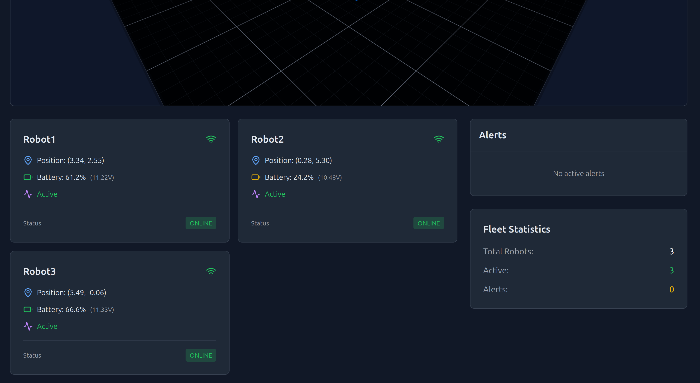
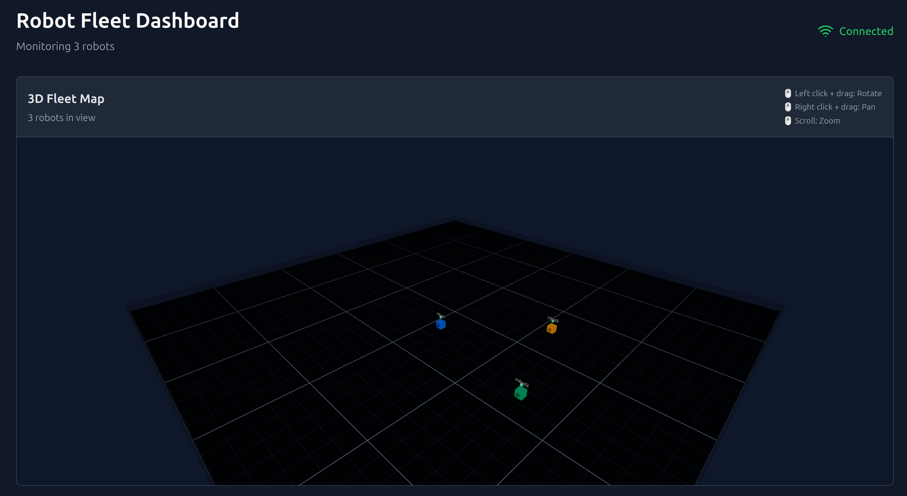

Overview
Online Dashboard here. Full-stack web application for real-time monitoring of robot fleets. The dashboard displays live telemetry from multiple simulated robots, featuring an interactive 3D visualization built with Three.js, battery monitoring with automatic alerts, and mission status tracking. Built with React/TypeScript frontend and Python FastAPI backend, deployed to Google Cloud Platform using Docker.
Key Achievement: Sub-100ms end-to-end latency from robot telemetry to dashboard display, with 10Hz update rate supporting real-time monitoring of multiple robots simultaneously.
Specifications
<100ms
End-to-End Latency
Frontend Architecture
React application with TypeScript providing type safety and improved developer experience. State management handled through Zustand for efficient real-time updates without unnecessary re-renders.
- Component framework: React 18 with TypeScript for type-safe component development
- 3D rendering: Three.js with React Three Fiber for interactive robot visualization
- State management: Zustand for lightweight, efficient real-time state updates
- Styling: Tailwind CSS for responsive, utility-first design
- Real-time data: Custom WebSocket hook managing connection state and automatic reconnection
3D Visualization
Interactive 3D map showing robot positions, orientations, and movement trajectories in real-time. Features orbit controls for camera manipulation, color-coded robot markers based on connection status, and smooth position interpolation.

Three.js 3D visualization showing robot positions with real-time updates
Backend Architecture
Python FastAPI server handling REST endpoints and WebSocket connections for real-time telemetry streaming.
- Framework: FastAPI with async support for high-performance request handling
- Real-time: WebSocket endpoint broadcasting robot state updates to all connected clients
- REST API: Endpoints for robot registration, mission queuing, and historical data retrieval
- Database: PostgreSQL for persistent storage of robot state and telemetry history
WebSocket Communication
Pub/sub architecture enabling instant updates from robot simulators to all connected dashboard clients. The backend maintains connection state and handles graceful reconnection with exponential backoff.
Features
Robot Status Cards
- Live position and orientation display updated at 10Hz
- Battery level with color-coded indicators (green/yellow/red thresholds)
- Connection status with automatic offline detection
- Individual robot detail expansion panel
Alert System
- Automatic low battery warnings with configurable thresholds
- Connection lost notifications with timestamp
- Alert history panel with severity indicators
- Visual badge showing active alert count
Fleet Statistics
- Total robots in fleet with active/offline breakdown
- Current alert count by severity
- Average battery level across fleet
- System status overview
Deployment
Containerized application deployed to Google Cloud Platform for public accessibility and portfolio demonstration.
- Containerization: Docker containers for both frontend and backend services
- Cloud hosting: Google Cloud Compute Engine VM with external IP
- Networking: Configured firewall rules for HTTP/WebSocket access
- Configuration: Environment-based settings for local development vs production deployment
Technology Stack
Frontend
React 18, TypeScript, Vite, Three.js, React Three Fiber, Zustand, Tailwind CSS
Backend
Python, FastAPI, WebSocket, PostgreSQL, SQLAlchemy, Uvicorn
DevOps
Docker, Google Cloud Platform, Git
Future Development
- Real robot integration: Connect Quadruped and Balloon Boy for live monitoring
- Path planning: Visualize planned trajectories and navigation goals
- Command interface: Send movement commands to robots from dashboard
- Historical charts: Plot battery drain and movement patterns over time
- Multi-robot coordination: Task assignment and fleet optimization algorithms